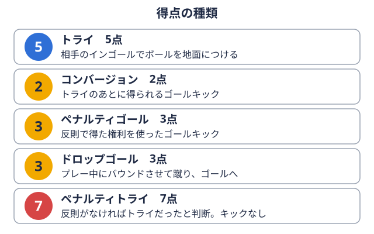

観戦ガイド 2026-09-18
大学ラグビーの勝ち点とボーナスポイント｜関東・関西・九州の配点と順位の決まり方
大学ラグビーの順位表を眺めていると、「勝ち数は同じなのに勝ち点試合の結果に応じて与えられるポイント。シーズンの合計が多い順に順位が決まる。用語辞典で見るが違う」「負けたのに勝ち点が増えている」といった場面に出会うことがあります。これは大学ラグビーの各リーグが、勝敗に応じた勝ち点に「ボーナスポイント勝敗とは別に、大差の勝利や僅差の敗戦などで加わる勝ち点。条件は大会ごとに決まっている。用語辞典で見る（ボーナス点）」を加えて順位を決めているためです。
結論からいうと、2026年度の配点は次のとおりです。関東（対抗戦関東の大学ラグビーの大会区分の一つ。Aグループ・Bグループに分かれて戦う。用語辞典で見るグループ・リーグ戦関東の大学ラグビーのもう一つの大会区分。1部・2部など「部」に分かれて戦う。用語辞典で見るグループ）と九州学生リーグは「勝ち5・引分3・負け1」、関西大学リーグは「勝ち4・引分2・負け0」が基本で、どの地区も「7点差以内の負け」と「3トライ相手のインゴール（ゴールの奥のエリア）で、ボールを地面につける得点。5点。 
地区別の勝ち点・ボーナス点の早見表
まず、地区ごとの配点を一覧で確認しておきましょう。
| 地区・リーグ | 勝ち | 引分 | 負け | ボーナス点 | 出典 |
|---|---|---|---|---|---|
| 関東大学対抗戦（A・Bグループ） | 5 | 3 | 1 | 7点差以内の負け+1／3トライ差以上の勝ち+1 | 関東協会の星取表 |
| 関東大学リーグ戦（1部・2部） | 5 | 3 | 1 | 7点差以内の負け+1／3トライ差以上の勝ち+1 | 関東協会の星取表 |
| 関西大学リーグ | 4 | 2 | 0 | 3トライ差以上の勝ち+1／7点差以内の負け+1／全勝+4 | 関西協会の順位決定方式 |
| 九州学生リーグ | 5 | 3 | 1 | 7点差以内の負け+1／3トライ差以上の勝ち+1 | 九州協会の開催規約（令和8年度） |
出典: 関東ラグビーフットボール協会「関東大学対抗戦Aグループ 星取表」「関東大学リーグ戦1部 星取表」、関西ラグビーフットボール協会「関西大学リーグ 順位決定方式（PDF）」、九州ラグビーフットボール協会「令和8年度 九州学生ラグビーリーグ 開催規約および実施要項（PDF）」
関東と九州は負けても勝ち点1が入る点、関西は全勝したチームにボーナス4が加わる点が、それぞれの特徴です。九州学生リーグは年度によって規定が変わっており、2025年度までは勝ち4・引分2・負け0の配点でした。前年の順位表と見比べるときは、その年度の規約を確認してください。
関東大学対抗戦・リーグ戦の勝ち点の仕組み
関東は、対抗戦グループとリーグ戦グループで大会の運営は別々ですが、2026年度の星取表に記載されている勝ち点の付け方は同じです。
配点は勝ち5・引分3・負け1
関東ラグビーフットボール協会の星取表では、勝ち点は「勝ち5、引分3、負け1」とされ、不戦勝は6点、不戦敗は0点、不成立は3点です。負けても試合を行えば勝ち点1が入るため、試合を実施すること自体が順位に反映される配点になっています。
ボーナス点は「7点差以内の負け」と「3トライ差以上の勝ち」
ボーナス点は次の2つです。
- 7点差以内の負け: 負けたチームに勝ち点1を追加
- 3トライ差以上の勝ち: 勝ったチームに勝ち点1を追加
「3トライ差」は得点差ではなく、両チームのトライ数の差で判定します。たとえば同じ20点差の勝利でも、トライ数の差が2本ならボーナス点は付きません。また、不戦勝・不戦敗の試合があっても、実施された試合のボーナス点は消えないと明記されています。
計算例：6勝1敗でも勝ち点が違う理由
1試合あたりの勝ち点は、勝ち＋ボーナスで最大6、負け＋ボーナスで最大2です。6勝1敗の場合、基本の勝ち点は5×6＋1＝31で、そこにボーナス点が上乗せされます。2025年度の対抗戦Aでは明治大学と筑波大学がともに6勝1敗でしたが、勝ち点は35と34で、この1点差が順位を分けました（当サイトの強豪大学ランキングの記事で整理しています）。同じ勝敗でも、何試合で3トライ差をつけたか、負けた試合が7点差以内だったかで勝ち点に差がつきます。
勝ち点が並んだときの順位決定（関東）
関東の星取表では、全試合終了時点で勝ち点が同じ場合、次の順で順位を決めると定めています。
- 全試合の勝利数が多いチーム
- 当該チーム同士の試合で、勝ち点が多いチーム
- 当該チーム同士の試合で、得失点差が多いチーム
- 全試合の総得失点差が多いチーム
- 全試合の総トライ数が多いチーム
- 全試合のトライ後のゴール数が多いチーム
- 抽選
最初に見るのが直接対決ではなく「全試合の勝利数」である点が、関東の規定の特徴です。勝ち点が同じでも、勝利数が多いチームが上位になります。
対抗戦Aの最新の順位と勝ち点の内訳は関東大学対抗戦の順位の解説記事、リーグ戦1部は関東大学リーグ戦1部の順位の解説記事で詳しく扱っています。
関西大学リーグの勝ち点の仕組み
関西は関東・九州と配点が異なります。
配点は勝ち4・引分2・負け0、全勝にはボーナス4
関西ラグビーフットボール協会の順位決定方式（リーグ規約第26条の引用）では、勝ち点は「勝ち4、引分2、負け0」で、ボーナス点は「3トライ差以上での勝利1、7点差以内での敗戦1、全勝4」とされています。全勝のチームに4点が加わるのは、関東・九州の規定にはない仕組みです。
一方のチームの責任で試合が中止になった場合は、その相手に勝ち点5が与えられ、不可抗力による中止では双方に勝ち点2が与えられるなど、中止時の扱いも定められています。
勝ち点が並んだときの順位決定（関西）
関西は、並んだチーム数によって手順が分かれます。
- 2チームが並んだ場合: 当該チーム同士の試合の勝敗 → 当該試合のトライ数 → コンバージョンキック成功数 → 先制トライ
- 3チーム以上が並んだ場合: 当該チーム間の勝ち点の合計 → （2チームが並べば上の手順）→ 当該チーム間の得失点差 → トライ数 → コンバージョンキック成功数 → 抽選
関東が「全試合の勝利数」から見るのに対し、関西は2チームなら直接対決の勝敗から見ます。Aリーグの最新の順位と読み方は関西大学ラグビーAリーグの順位の解説記事で確認できます。
九州学生リーグの勝ち点の仕組み
九州学生リーグは、2026年度（令和8年度）の開催規約で、勝ち5・引分3・負け1・不戦勝6・不戦敗0・不成立3とされ、ボーナス点は7点差以内の負けと3トライ差以上の勝ちに各1です。同点時は、全試合の勝利数 → 当該チーム同士の勝ち点 → 当該チーム同士の得失点差 → 全試合の総得失点差 → 総トライ数 → トライ後のゴール数 → 抽選の順で、関東と同じ並びです。
九州の特徴は、リーグ戦の順位がそのまま最終順位にならない点です。規約では、リーグ戦の後に順位決定戦を行い、その1位のチームに全国大学選手権の出場資格が与えられます。仕組みと過去の結果は九州学生ラグビーの順位の解説記事で整理しています。
勝ち点が「選手権」と「入替戦」に直結する
勝ち点による順位は、全国大学選手権の出場権と、翌年の所属リーグを決める入替戦上のグループの下位チームと下のグループの上位チームが戦い、翌シーズンの所属を決める試合。用語辞典で見るの両方に関わります。
第63回全国大学ラグビーフットボール選手権大会（2026年度）の出場枠は、関東大学対抗戦Aが3（前回大会の優勝・準優勝校の所属グループとして追加枠2があり、計5）、関東大学リーグ戦1部が3、関西大学Aリーグが3、九州学生リーグが1などで、リーグ内の順位によって登場するラウンドも変わります（出典: 日本ラグビーフットボール協会 大会概要）。下位のチームは入替戦の対象になり、たとえば関西ではAリーグの下位2チームがBリーグの上位2チームと入替戦を行うと規約で定められています。関東の入替戦は関東大学ラグビーの入替戦の解説記事をご覧ください。
このため、シーズン終盤は「勝つかどうか」だけでなく、「3トライ差をつけられるか」「負けても7点差以内に抑えられるか」が順位を動かす場面があります。選手権の日程は大学ラグビー選手権の日程の記事にまとめています。
よくある質問
ボーナスポイントは引き分けにも付きますか？
関東・九州の規定では、ボーナス点の対象は「7点差以内の負け」と「3トライ差以上の勝ち」です。関西も「3トライ差以上での勝利」「7点差以内での敗戦」「全勝」で、引き分けを対象とするボーナス点の記載はありません。
勝って勝ち点1、負けて勝ち点1のような試合はありますか？
関東・九州の配点では負けでも勝ち点1が入り、7点差以内ならさらに1点が加わります。そのため負けたチームの勝ち点は1または2、勝ったチームは5または6になります。関西では負けたチームは0または1、勝ったチームは4または5です。
ラグビーマニアの順位表の勝ち点が公式と違うのはなぜですか？
当サイトの順位表は、試合結果から編集部が算出した参考値で、公式のボーナス点を反映していない場合があります。確定の順位は、各協会の星取表・順位発表で確認してください。
順位表の見方を押さえて観戦をもっと楽しむ
勝ち点とボーナス点の仕組みを知っておくと、単純な勝敗表以上に順位表の数字が持つ意味が見えてきます。各カテゴリの試合結果と順位は、関東大学対抗戦Aグループの順位表、関東大学リーグ戦1部の順位表、関西大学Aリーグの順位表、九州学生リーグAの順位表で随時更新しています。対抗戦とリーグ戦の成り立ちの違いは対抗戦とリーグ戦の違いを解説した記事もあわせてご覧ください。
出典
- 関東ラグビーフットボール協会「関東大学対抗戦Aグループ 星取表」「関東大学対抗戦Bグループ 星取表」「関東大学リーグ戦1部 星取表」「関東大学リーグ戦2部 星取表」
- 関西ラグビーフットボール協会「関西大学リーグ 順位決定方式（リーグ規約引用・PDF）」
- 九州ラグビーフットボール協会「令和8年度 九州学生ラグビーリーグ 開催規約および実施要項（PDF）」
- 日本ラグビーフットボール協会「第63回全国大学ラグビーフットボール選手権大会 大会概要及び試合日程について」
この部活・競技を応援したい方へ
取材してほしい部活を募集中
部活を続けながら、就活も進めたい方へ
体育会の学生のための就活相談です。無料で、メールアドレス・学年・所属の入力だけで始められます。